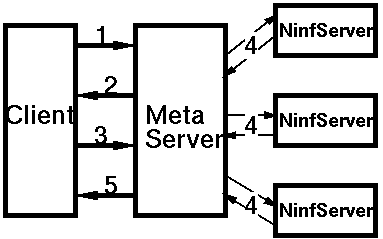

 <center> <H1>  並列実行の実装 </H1> </center> <hr noshade width = 80% algn = "center"> <H2>

<OL>
<LI> クライアントがデータフローを作成し、メタサーバに渡す<p>
<LI> メタサーバ は、受けとったデータフローを用いて、トランザクションに
対応する疑似インターフェイス情報を作成しそれを送り返す<p>
<LI> クライアントは、インターフェイス情報を用いて引数をメタサーバに
渡す<p>
<LI> メタサーバ はデータフローにしたがって、複数の関数を順次ディスパッチ
する<p>
<li> すべての関数の実行が終了すると、書き戻すべき情報をクライアントに送信する
</OL>
 <hr> <center><table><td><h2>　　　　　　　　　　　　　　　</td><td></td><td></td><td><h2><em>　　　　　　　HOKKE' 96 </td></table></center>

